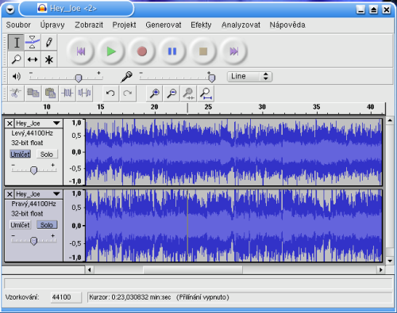

Náš cieľ
Našim cieľom bude naučiť sa základom práce s tvorbou videozáznamu. Naša činnosť bude spočívať z nasledovných činností:
- nahrávanie zvuku cez mikrofón do videa - nastavenie zvukovej karty
- tvorba video stopy z videosekvencií, obrázkov
- spájanie videostopy so zvukovou stopou
- titulkovanie
Na strihanie videa existuje viacero programov mnohé sú free a mnohé su komerčné, my sa budeme orientovať na programy, ktoré sú free.
Zvuk
Zvuk je pozdĺžne mechanické vlnenie s istou vlnovou dĺžkou a teda odpovedajúcou frekvenciou, s istou farbou
a intenzitou (hlasitosťou). Zvuk sa šíri len v prostredí vyplnenom atómami alebo molekulami látok. Rýchlosť šírenia vo vzduchu závisí od
teploty a tlaku ale približne je asi 330 m/s. Vo vode sa šíri asi 4x rýchlejšie. Každé chvenie hmotného telesa v hmotnom prostredí vedie ku
vzniku zvuku (nie každý zvuk ale musí byť ľudským uchom zachytitelný). Výška tónu je daná jeho frekvenciou.
Vyvolajme v prostredí nejaký zvuk - napríklad tón. Sledujme pohyb nejakej malej vzorky tohoto hmotného prostredia a výchylku zapíšme
na os y na os x dáme čas. V prípade čistého (jedného) tónu nám vznikne krivka sinusoida. V praxi sa s úplne čistým tónom nestretneme (každý zvuk je vlastne
zmes tónov rôznych frekvencií a hlasitostí)a sínusovka
bude mať drobné odchýlky od svojho ideálu spôsobené ďalšími frekvenciami, ktoré vytvárajú farbu tónu. (inak znie komorné a na klavíri a inak na trúbke).
Ľudské ucho vie zachytiť a rozpoznať zvuky frekvencií <20Hz, 20kHz> . Tento rozsah sa udáva z dávnejšej histórie, keď sluch človeka nebol tak
namáhaný a atakovaný rôznymi "nepriatelskými" vymoženosťami ako sú walkmany, koncerty pop hudby, diskotéky, autá, zbíjačky a pod. Tiež nie všetky frekvencie
sú rovnako intenzívne spracovávané. Najlepšia citlivosť je na zvuky <1000Hz, 5000Hz>.
Prevod zvuku z analógovej podoby do digitálnej
 Počítače však vedia spracovávať len digitálne informácie. Analógový signál sa pred spracovaním v počítači musí kódovať - digitalizovať.
Zabezpečuje to A/D - analógovo - digitálny prevodník. Táto zmena samozrejme pôvodný signál skreslí - ide o to aby toto skreslenie
nemalo pre ľudský sluch významnosť. Najrozšírenejšia forma kódovania je pulzná kódová modulácia - PCM.
Než sa z analógového signálu stane PCM zvuk, musí najprv prejsť vzorkovaním, kvantovaním a kódovaním.
Počítače však vedia spracovávať len digitálne informácie. Analógový signál sa pred spracovaním v počítači musí kódovať - digitalizovať.
Zabezpečuje to A/D - analógovo - digitálny prevodník. Táto zmena samozrejme pôvodný signál skreslí - ide o to aby toto skreslenie
nemalo pre ľudský sluch významnosť. Najrozšírenejšia forma kódovania je pulzná kódová modulácia - PCM.
Než sa z analógového signálu stane PCM zvuk, musí najprv prejsť vzorkovaním, kvantovaním a kódovaním.
Vzorkovanie
Vzorkovač zaznamenáva aktuálne hodnoty (výchylky) analógového signálu v pravidelných intervaloch s istou frekvenciou
napr. pri frekvencii 10kHz sa zaznamená hodnota signálu 10 000 krát za sekundu. Vzniká signál PAM - pulzná amplitúdová modulácia.
Vzorkovacia frekvencia (Sampling rate)
Aby sa dal vzorkovaný signál PAM pri reprodukcii plne zrekonštruovať, musí byť splnené tzv.
"Nyquistovo kritérium" : frekvencia, ktorou sa vzorkovanie prevádza, musí byť aspoň 2-krát vyššia ako frekvencia pôvodného signálu.
Ak je počuteľný zvuk od 20Hz - 20kHz, tak vzorkovacia frekvencia musí byť aspoň 40kHz. V praxi sa vzorkuje s 10% navýšením, preto sa používa
vzorkovacia frekvencia 44,1kHz. Všeobecne možno povedať, že čím väčšia vzorkovacia frekvencia tým je lepšie zachytená farba tónov a naopak znižovaním
vzorkovacej frekvencie prvá odchádza farba zvuku a ďalším znižovaním sa znižujú vyššie frekvencie (zvuk plechatie)
Kvantovanie
Kvantovaním sa namerané hodnoty "zaokrúhľujú" na najbližšiu úroveň amplitúdy každej vzoky , preto má digitálny signál na rozdiel od analógového
schodovitý priebeh.
Kódovanie
Pri kódovaní zvuku hudobného CD sa používa 16 bitové kódovanie - t.z že každú vzorku zakódujeme 16 - ticou jednotiek a núl - všetkých
možných napäťových úrovní signálu teda môže byť 216=65536 (hovor v telefóne je kódovaný 8 bitmi - rozlišuje 256 napäťovýh úrovní).
V prípade stereofónneho signálu sa používajú 2 kanály a výstupom sú 2 prúdy digitálnych hodnôt. Pre porovnanie uvádzame nasledujúcu tabuľku:
| Kvalita digitálneho záznamu |
vzorkovacia frekvencia |
rozlišenie, kanály |
| Telefóna kvalita | 11 025Hz | 8 bit - mono
|
| Rozhlasová kvalita | 22 050Hz | 8 bit - mono
|
| CD kvalita | 44 100Hz | 16 bit - stereo
|
| DVD kvalita | 192 000Hz | 24 bit - 5.1 surround sound
|
Príklad: Ak chceme zakódovať 1 minútu stereo nahrávky s použitím vzorkovacej frekvencie CD
kvality, tak takýto PCM zvuk bude zaberať 60x2x44100x16 bitov čo je asi 10MB pamäte.
Čím je vyššia vzorkovacia frekvencia, tým kvalitnejší zvuk získame. Doteraz najkvalitnejší zvuk v CD kvalite so
vzorkovacou frekvenciou 44,1kHz, 16bit stereo je prekonaný formátom DVD-Audio, kde vzorkovacia frekvencia je až 192kHz
s 24 bitovým rozlíšením.
ÚLOHA:
Vypočítajte dĺžku zvukovej nahrávky (5+1 kanálový zvuk), ktorá
na DVD zaberá 64MB a je nahraná v DVD kvalite.
Nahrávanie zvuku
Čo k tomu potrebujeme:
- PC so zvukovou kartou
- V "správnej dierke" pripojený mikrofón
Čo k tomu potrebujeme:
Samotnému nahrávaniu predchádza trochu experimentovania - nastavenie citlivosti mikrofónu. Urobíme to cez program nastavenie hlasitosti
(dva krát zaklopeme na ikonku reproduktora na hlavnom paneli vpravo dole alebo nájdeme tento program cez Start v časti Zábava.)
Zvolíme z menu Vlastnosti časť nahrávanie a nastavíme na mikrofóne hlasitosť.
Pre vytvorenie jednoduchého záznamu zvuku môžme použiť program, ktorý je súčasťou príslušenstva OS
Windows. Umožňuje záznam dlhý až 1 minútu, ktorý môžeme uložiť vo formáte wav - Windows PCM zvuk (pozri digitalizácia
zvuku). Program ponúka aj jednoduché efekty, ako je zrýchlenie, či spomalenie záznamu, vloženie ozveny a zaujímavé spätné prehrávanie.
Náročnejší užívatelia môžu siahnuť po programe audacity, ktorý je free a poskytuje oproti win klasike bohatšie možnosti
Audacity
Opis programu

Aplikácia obsahuje tri panely: ovládací, editačný a panel mixéru.
Ktorýkoľvek z panelov môžeme nechať "plávať" (zapíname to napr. v menu Zobrazenie).
Editačný panel umožňuje kopírovať, vystrihovať, vkladať výber resp. ticho; neobmedzený krok späť (Undo),
zväčšenie resp. zmenšenie náhľadu stopy.
Panel nástrojov obsahuje ovládacie prvky na nahrávanie- prehrávanie zvuku a niekoľko špeciálnych nástrojov.
Opakované prehrávanie dosiahneme stlačením klávesy Shift+ ikony Play. Ostatné nástroje umožnia vybrať čas nahrávky,
časový posuv (teda aj synchronizáciu) súboru, lupa, obálka na ľubovoľnú úpravu hlasitosti nahrávky a napokon (v ríši hudby nezvyčajný)
nástroj kreslenie, ktorým pri dostatočnom zväčšení stopy môžeme upraviť drobné prasknutia a iné rušivé zvuky v nahrávke. Kreslením takto dokončíme
prácu filtra na odstránenie praskania.
Panel mixéru umožňuje nastaviť hlasitosť vstupu a výstupu zvuku. V dolnej časti programu si vyberieme vzorkovaciu frekvenciu. Je z čoho
:-) (až 96 kHz alebo vlastná...). Je tam tiež riadok so zobrazením informácií o prvku, ktorý je momentálne pod kurzorom myši. Nad ním sa
nachádza samotné okno so zvukovými stopami, v ľavej časti sú panely pre jednotlivé stopy. Ich menu vyvoláme kliknutím na tlačidlo so šípkou.
Môžeme si v ňom vybrať meno stopy, jej presun, spôsob zobrazenia, vzorkovaciu frekvenciu, rozdelenie (spojenie) stereo stopy atď. Najmä
treba upozorniť na možnosť programu pracovať s formátom vzorkovania 32-bitov float (na Audio CD je to iba 16 bitov !), čo síce značne zväčší
výsledný súbor, no kvalita záznamu bude lepšia. Stopu možno tieš umlčať, resp. zvýrazniť, alebo zmeniť vyváženie príslušnými tlačidlami.
Podporované formáty
Audacity vie importovať formáty midi, mp3, ogg,wav, aiff, raw, IRCAM, Sun Au/NeXT. Má aj vlastný formát pre ukladanie
projektov aup (AUdacity Project format), čo je výhodné vtedy, ak pracujeme na väčšom projekte a nechceme ho neustále konvertovať na mp3.
Ak sme ku programu nahrali aj požadovaný kompresor MP3 dokáže exportovať súbory do formátu MP3, štandartne robí export do Wav.
Platí: mp3 je zaťažený patentom, preto kompresor napr. lame) nie je súčasťou Audacity, ale musíme si ho stiahnuť zvlášť. Prevod skladby na formát
mp3, alebo ogg spôsobí zníženie kvality skladieb, je to stratová kompresia.
Ukážky
Úloha
- V programe audacity vytvorte dve zvukové stopy - v jednej bude hudobné pozadie a na druhej bude vaše hovorené (spievané slovo).
Hudba nech sa začína postupným pridávaním hlasitosti a posledné slovo nech je s ozvenou.
Urobte export do mp3.
Pozn.